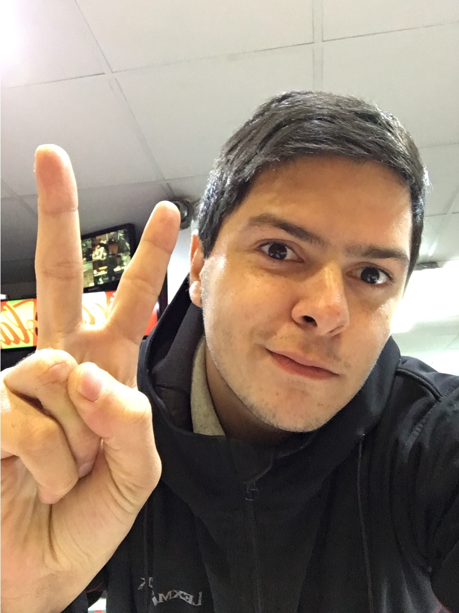

INFORMACION PERSONAL

Con más de 4 años de experiencia en el área comercial y de gerencia, busco consolidarme profesionalmente en una empresa donde los logros personales y el desempeño sean reconocidos, además de permitir oportunidades de desarrollo personal y profesional.
Skills
Estraregias de Negocio, Atención Especializada al Cliente, PC Windows X, Vista, XP,:Seniority Avanzado, MS Office:Seniority Avanzado, Resolución de Conflictos, Previsión de Presupuestos, Gestión Base de Datos, Rapidez / Gestión del Tiempo, Liderazgo, Habilidades Matemáticas Avanzadas.
Idiomas
- Nivel de Español:
- Habla:Fluido
- Gramatica:Fluido
- Nivel de Ingles:
- Habla:Basico
- Gramatica:Intermedio